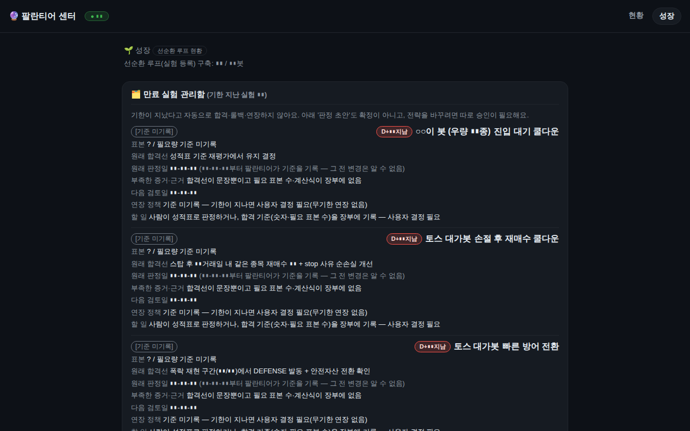

실전 가동
주식 자동매매
💵 실돈Claude Code
섹터 적립봇 Sector DCA Bot
미국 11개 섹터 ETF를 모멘텀 틸트로 적립하는 약세장 방어형 포트폴리오 봇
미국 섹터 ETF 11종을 균등 코어 위에 상대강도 틸트를 얹어 적립식으로 운용하는 봇이다. 2026-07에 모의로 시작해 곧 실계좌(LIVE)로 전환했다.
기세(vigor) 필터가 약해진 주도 섹터를 방출하면 목표비중이 균등으로 환원되는 설계이며, 현금 단일 진실원천과 멱등 주문 의도 기록, 브로커 하드게이트로 체결 무결성을 지킨다.
백테스트상 강세장에서는 SPY에 뒤지지만 약세장 낙폭을 줄이는 방어 전략으로 판정되었다. 형제 봇(picks, family, couple, pentagon)의 모태가 된 포크 원본이기도 하다.
- 기간
- 2026-07 ~ 2026-09-25
- 기술
pythonsqlitetelegramsystemdtoss-open-api- 코드
- 62,718 줄
- 테스트
- 815 개
- 커밋
- 131
- systemd 유닛
- 3 개
- 저장소
- intohumble-ai/sector-dca-bot (비공개)
세션 0 (Claude Code 0 · Codex 0 · 자동 호출 177)마지막 활동 2026-09-25
- 2026-09-25 13:39커밋fix(RV-02B 콜드감사 P3-B·C·D): 읽기전용 회귀 테스트 + 롤백 순서(정지 후 관문) + 백업명 셸 안내
- 2026-09-25 13:30커밋fix(RV-02B 최종감사 D2·D3·P3): 검사 도구 롤백 관문 + 절차서 통일 + 주문 사이클 무체결 해제 알림
- 2026-09-25 13:03커밋feat(RV-02B 사용자 결정 D-1×수수료): 예약액이 장부 현금보다 수수료 한도 이내로만 크면 주문
- 2026-09-25 11:35커밋fix(RV-02B 4차 감사 P3-1~3): 수동 해소는 열린 사건·비자동 대상만, 전송 중 닫힌 intent 재개방 금지, 요약에 대조용 원
- 2026-09-25 11:31커밋fix(RV-02B 3차 감사 P2-A~D): 수동 해소 대상 한정·오귀속 차단·확인 단계 원자화
- 2026-09-25 11:25커밋feat(RV-02B 사용자 결정): 미확정 주문 수동 해소 /해소→/해소확인 2단계(기본 OFF) + 설계 이탈 7건·배포 절차 갱신
- 2026-09-25 11:25커밋fix(RV-02B 총괄감사 후속): equity 에 열린 예약 가산·tx 커밋 실패 rollback·대사 정산분 부족비교·동결 판정 실패 시
- 2026-09-25 10:54커밋test(RV-02B 재감사 P3-a): 동결 제외는 같은 세션 재개 대상만 — 지난 세션 전송 전 cid 는 동결 유지
- 2026-09-25 10:51커밋fix(RV-02B 콜드감사 P2×3·P3): 계약 없는 클라이언트 재개·해제 금지, 대사 실패에도 placed 종목 동결, 재개 분기 직접 검
- 2026-09-25 10:33커밋fix(RV-02B): _live_orders — cursor 무시(같은 페이지 반복) 감지·주문번호 중복 제거
- 2026-09-25 10:32커밋feat(RV-02B 8/8): 이행 대사 스크립트(mode=ro)·배포 절차·외부검토 반례 4종 실제 경로 테스트
- 2026-09-25 10:28커밋feat(RV-02B 6/8): 텔레그램 읽기 명령 /근거 /재조회 /확인했음 (D-5: 금전 상태변경 0)
세션 제목과 커밋 제목만 표시합니다. 대화 내용·파일·경로는 공개하지 않습니다.
- 11개 섹터 ETF 균등 코어 + 상대강도 틸트
- vigor(기세) 필터로 꺾인 주도 섹터 방출
- 적응형 코어(adaptive_core) 기능 플래그
- 킬스위치와 방어 모드
- 섀도 변형 A/B 운용과 레이스 리포트
- 배당 누적·재투자 처리
- 원화 표시 및 체감 손익 카드
- 배정 큐(assign)로 입금 현금 안전 반영
- 텔레그램 명령과 일일 배분 브리핑
- reconcile로 브로커-장부 정합 점검
서비스active
마지막 로그오늘
마지막 커밋2026-09-25
데이터 기준2026-10-10 14:16
테스트 수815
실적·잔고·수익률은 공개 정책상 표시하지 않습니다(설정으로 켤 수 있음). 상태는 PC 의 빌더가 10분마다 읽어 올립니다.
실제 화면을 찍은 뒤 숫자·식별자를 자동으로 가린 스크린샷입니다.

가짜 데이터로 돌아가는 미니 데모입니다. 직접 눌러보세요. (실 계좌·실 API 와 연결돼 있지 않습니다)
새 창에서 열기 →- 대시보드의 '11섹터 균등'은 버그가 아니라 vigor 필터가 주도 섹터를 전원 방출한 정상 동작이었음
- 수수료 fee=0은 표본 12행만 보고 과소기재로 오판했다가 실제 체결 응답으로 반증 — 실응답을 읽어야 함
- 백테스트 결과 강세장 CAGR은 SPY에 열위, 약세장 낙폭은 방어하는 레짐 의존 전략으로 정직하게 판정
- 대시보드와 봇의 목표비중 계산을 48케이스 패리티 테스트로 비트 단위 일치 확인
이 프로젝트에 등록된 아이디어가 아직 없습니다.